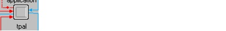
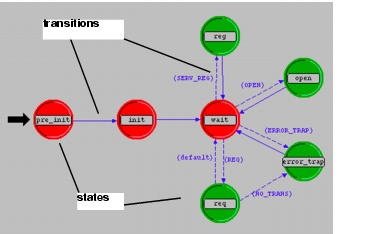
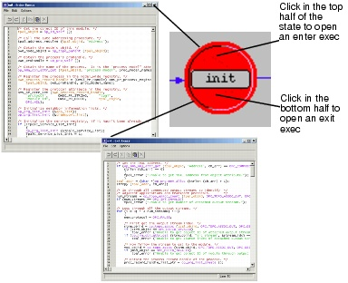
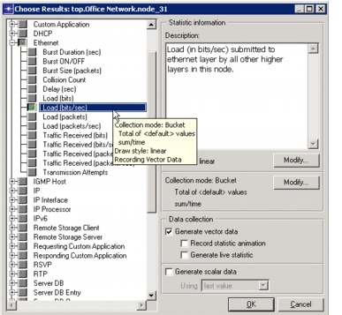
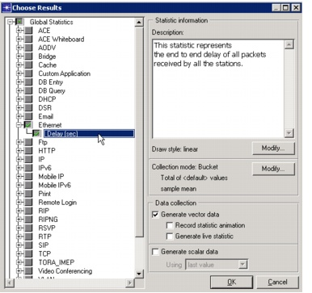
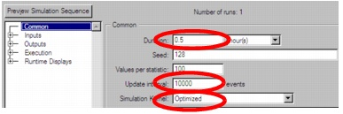

Small Internetworks
Introduction
In this lesson, you will see how Modeler can do organizational scaling to solve a typical "what if" problem. You will learn how to use Modeler features to build and analyze network models. This lesson focuses on the use of the Project Editor, and how it will be used with the Node and Process editors in later lessons. In this lesson, you will
In this lesson, you use the Project Editor to build a topology of a small internetwork, choose statistics to collect, run a simulation, and analyze the results.
In this lesson, you plan for the expansion of a small company's intranet. Currently, the company has a star topology network on the first floor of its office building and plans to add an additional star topology network on another floor. You will build and test this "what-if" scenario to ensure that the load added by the second network will not cause the network to fail.
The Final Network
Getting Started
When creating a new network model, you must first create a new project and scenario. A project is a group of related scenarios that each explore a different aspect of the network. Projects can contain multiple scenarios.
After you create a new project, you use the Startup Wizard to set up a new scenario. The options in the Wizard let you
The Startup Wizard automatically appears each time you create a new project. The Startup Wizard lets you define certain aspects of the network environment.
To use the Startup Wizard to set up a new scenario, do the following:
- If Modeler is not already running, start it.
- Select File > New...
- Select Project from the pull-down menu and click OK.
- Name the project and scenario, as follows:
- Name the project <initials>_Sm_Int.
- Name the scenario first_floor.
- Click OK.
- Enter the values shown in the following table in the dialog boxes of the Startup Wizard.
Include your initials in the project name to distinguish it from other versions of this project.
The Startup Wizard opens.
Values to Enter in the Startup Wizard
A workspace of the size you specified is created. The object palette you specified opens in a separate window.
Creating the Network
Network models are created in the Project Editor using nodes and links from the object palette.
Node—A representation of a real-world network object that can transmit and receive information.
Nodes

Link—A communication medium that connects nodes to one another. Links represent physical connectivity (e.g., electrical or fiber optic cables).
A Link
These objects are found in the object palette, a dialog box that contains graphical representations of node and link models.
If it is still open, close the object palette.
You can use any of three methods to create a network topology, or a combination of all three. One method is to import the topology (discussed in a later lesson). Another is to place individual nodes from the object palette into the workspace. The third method is to use Rapid Configuration.
Rapid Configuration creates a network in one action after you select a network configuration, the types of nodes within the network, and the types of links that connect the nodes.
To create the first-floor network using Rapid Configuration:

Specify the node models and link models in the network. Models follow this naming scheme:
Generic Devices:
<protocol1>_..._<protocoln>_<function>_<mod>
Vendor Devices:
<Vendor>_<Chassis/Make>_<protocol1>
where:
For example:
ethernet2_bridge_int
specifies the intermediate (int) derivation of a 2-port Ethernet (ethernet2) bridge (bridge).
Vendor models have an additional prefix that specifies the vendor and the vendor product number for that particular network object.
For example, the 3Com switch used in this lesson is named:
3C_SSII_1100_3300_4s_ae52_e48_ge3
This node is a stack of two 3Com SuperStack II 1100 and two Superstack II 3300 chassis (3C_SSII_1100_3300) with four slots (4s), 52 auto-sensing Ethernet ports (ae52), 48 Ethernet ports (e48), and 3 Gigabit Ethernet ports (ge3).
To specify the nodes and links to use to build the network:
Specify where the new network will be placed:
Now that the general network topology has been built, you need to add a server. You will use the second method of creating network objects: dragging them from the object palette into the workspace.
- If it is not already open, open the object palette by clicking on the Object Palette tool button.

- Find the Sm_Int_server object in the palette and drag it into the workspace.
- Because you do not need additional copies of this model, right-click to turn off node creation.
You will not find this exact server model on other object palettes because we created it with the correct configuration for this tutorial.
By default, you can create additional instances of the same object by left-clicking after the initial "drag-and-drop" from the palette.
You also need to connect the server to the star network.
- Find the 10BaseT link object in the palette and double-click on it.
- Move the mouse from the object palette to the project workspace. Now click on the server object to draw one endpoint of your link, then click on the switch object in the center of the star to complete the link.
- Right-click to turn off link creation.
A link is drawn, connecting the two objects.
Finally, you need to add configuration objects to specify the application traffic that will exist on the network. Configuring the application definition and profile definition objects can be complicated, so you do not have to do these tasks right now. For this tutorial, we included, on the object palette:
You need only drag the objects into your network. Doing so means that the traffic caused by workstations accessing a database at a low rate will be modeled.
The network is now built and should look similar to the following figure.
The Finished First Floor Network

You are now ready to collect statistics.
However, first let's explore the Node and Process Editors.
The Node and Process Editors are integral to the Modeler workflow. The Node Editor is used to create node models that describe the internal flow of data within a network object. The Process Editor is used to create process models that describe the behavioral logic of a module in a node model.
Every node in a network has an underlying node model that specifies the internal flow of information in the object. Node models are made up of one or more modules connected by packet streams or statistic wires. Node modules in turn contain process models. A process model is represented by a state transition diagram (STD) that describes the behavior of a node module in terms of states and transitions.
Let's explore the node model that controls the server in the first floor network:
The following figure shows the node model within the Ethernet Server network object. The node model is made up of several different types of modules, which are described in the M/M/1 tutorial. Packet streams and statistic wires connect the modules.
Ethernet Server Node Model

During a simulation, packets sent from a client machine are received by the hub receiver object (hub_rx_0_0) and processed up the protocol stack to the application module. After processing, they are sent down the stack to the transmitter (hub_tx_0_0), then back to the client machine.
Packet Processing by the Node Model

Next, let's look at the process model that defines the behavior of the tpal module. To view the process model:
- Double-click on the tpal module in the Node Editor.

- Note the red and green states (these will be discussed in greater detail in the Basic Processes lesson) and the solid and dotted lines indicating transitions between the states.
- Open an enter exec by double-clicking on the top half of the init state.
- Open an exit exec by double-clicking on the bottom half of the state.
- Close both exec windows.
- Close the Node and Process editors. If prompted, do not save changes.
The Process Model Editor opens in a new window.
Example Process Model

Each state in the process model contains an enter executive and an exit executive. Enter executives are executed when a process enters a state. Exit executives are executed when the process leaves the state. Operations performed in the state are described in C or C++.
Opening the Enter Exec or Exit Exec of a State

States are connected via transitions. Transitions can be either conditional (that is, they have a logical test that must be true before the transition occurs) or unconditional (no logical test).
The following figure shows a conditional transition (the dotted line) from the wait state to the reg state. The condition SERV_REG must be true before the transition can occur. However, the transition from reg to wait (solid line) is unconditional, and occurs whenever the code in the reg state has finished execution.
Conditional and Unconditional Transitions

Later lessons explore these editors in greater depth.
Collecting Statistics
You can collect statistics from individual nodes in your network (object statistics) or from the entire network (global statistics).
Now that you have created the network, you should decide which statistics you need to collect to answer the questions presented earlier in this lesson:
To answer these questions, you need a snapshot of current performance for comparison. To get this baseline, you will collect one object statistic, Server Load, and one global statistic, Ethernet Delay.
Server load is a key statistic that reflects the performance of the entire network. To collect statistics related to the server's load, do the following steps:
- Right-click on the server node (node_31) and select Choose Individual DES Statistics from the server Object pop-up menu.
- To collect the Ethernet load on the server:
- Expand the treeview for Ethernet in the Choose Results dialog box to see the Ethernet statistic hierarchy.
- Click the checkbox next to Load (bits/sec) to enable collection for that statistic.
- Click OK to close the dialog box.
The Choose Results dialog box for node_31 appears.
The Choose Results dialog box hierarchically organizes the statistics you may collect.
Note—The list of statistics can vary from the ones shown in this tutorial; they depend on the set of software components you have installed.
Choose Results Dialog Box

Global statistics can be used to gather information about the network as a whole. For example, you can find out the delay for the entire network by collecting the global Delay statistic:
- Right-click in the workspace (but not on an object) and select Choose Individual DES Statistics from the workspace pop-up menu.
- Expand the Global Statistics hierarchy.
- Expand the Ethernet hierarchy.
- Click the checkbox next to Delay (sec) to enable data collection.
- Click OK to close the Choose Results dialog box.
- It is good to get into the habit of saving your project every so often. Choose File > Save, then click Save (the project already has a name, so you don't need to rename it).
Global Statistic Chosen

Now that you have specified the statistics to collect and saved the project, you are almost ready to run your simulation.
First, though, verify that your Network Simulation Repositories preference is set appropriately.
- Choose Edit > Preferences.
- Type network sim in the Search for: field and click the Find button.
- If the Value field for the Network Simulation Repositories preference is not stdmod, click on the field.
- Click the Insert button, then type stdmod in the field.
- Click OK twice to close the Network Simulation Repositories and Preferences dialog boxes.
The Network Simulation Repositories dialog box opens.
To run a simulation:
- Select DES > Configure/Run Discrete Event Simulation...
- Click on the Detailed... button, if it is present.
- Type 0.5 in the Duration: field to simulate one-half hour of network activity.
- Type 10000 (events) in the Update interval: field to specify how often the simulation calculates events/second data.
- Set the Simulation Kernel to Optimized.
- Click the Run button to begin the simulation.
- When the simulation finishes, the contents of the Messages tab appears. Click the Close button in the Simulation Sequence dialog box.
- If your simulation does not complete, if no results were collected, or if the results vary significantly from those shown, you will have to troubleshoot your simulation. See "Troubleshooting Tutorials".
You can also open the Configure Discrete Event Simulation dialog box by clicking on the Configure/Run Discrete Event Simulation (DES) tool button.
Configure Discrete Event Simulation Dialog Box

In this case, the simulation calculates and displays events/second data at 10,000-event intervals. The default setting for this is 500,000 for larger network simulations.
You can use one of two types of kernels to run your simulation. The development kernel collects simulation data you can use to debug your models, but the optimized kernel runs faster.
While the simulation runs, a dialog box appears showing the simulation's progress.
Simulation Progress Dialog Box

The dialog box above shows that, in 1 second of elapsed (actual) time, Modeler has simulated 19 minutes and 25 seconds of network time. The entire simulation should take less than one minute to complete—the elapsed time varies according to the speed of your computer.
Viewing Results
After your simulation has executed, you will want to see the information collected for each statistic. There are several ways to view results; in this lesson you will use the View Results option in the Workspace pop-up menu.
You will learn different ways to view results in later lessons.
To view the server Ethernet load for the simulation:
- Right-click on the server node (node_31) choose View Results from the server's Object pop-up menu.
- Expand the Office network.node_31 > Ethernet hierarchy.
- Click on the checkbox next to Load (bits/sec) to indicate that you want to view that result.
- Click the Show button in the Results Browser.
The Results Browser opens.
The graph of the server load appears in the Project Editor, as shown in the following figure.
The graph of the server load should resemble the following graph. Your results may differ slightly due to differences in node placement and link length, but the general trends should be consistent.
Server Load Graph

Note that at its peak, the load on the server is about 7,000 bits/second. You will need this baseline for comparison after you add the second network.
When you finish viewing the server load graph, close this dialog box and the Results Browser. (If the system prompts you, choose to delete the graph panel.)
The View Results option from the Workspace pop-up menu allows you to obtain global statistics and individual object statistics from one treeview.
You also should look at the Global Ethernet Delay on the network. To view this statistic:
- Right-click in the workspace, then select View Results from the pop-up menu.
- Check the box next to Global Statistics > Ethernet > Delay (sec).
- Check the box next to Object Statistics > Office Network.node_31 > Ethernet > Load (bits/sec), and then click the Show button to view the Ethernet delay for the whole network.
Viewing Ethernet Delay for the Whole Network

The Ethernet delay graph appears in the Project Editor. The graph should resemble the following figure.
Ethernet Delay Graph

Note that after the network reaches steady state the maximum delay is around 0.4 milliseconds.
When you finish viewing the graph, close the graph and the Results Browser.
Expanding the Network
You have created a baseline network and gathered statistics about it. Now you are ready to expand the network and verify that it still operates sufficiently well with the additional load.
When performing a "what-if" comparison, it is convenient to store the baseline network as one scenario and create the experimental network as a different scenario. You will duplicate the existing scenario and make changes to it instead of building the new topology from the beginning.
To duplicate a scenario:
The second-floor segment will resemble the first-floor segment, but will not have a server of its own. To build the new segment:

Join the two networks:
- If it is not already open, click the tool button to open the object palette.

- Expand the Cisco 2514 folder.
- Drag the Cisco 2514 router icon into the workspace between the two networks. Right-click to turn off node creation.
- Expand the Link Models folder and double-click on the 10BaseT link icon in the object palette.
- Create 10BaseT links between the Cisco router (node_50) and the 3Com switches at the center of each star.
- Right-click to turn off link creation.
- Close the object palette.
- Select File > Save.

The final network should look like this:
The Final Network

To run the expansion scenario:
- Select DES > Configure/Run Discrete Event Simulation...
- Click the Detailed... button, if it appears, and verify that the Duration is set to 0.5 hours and the Update interval is set to 10000.
- Click the Run button to begin the simulation.
- When the simulation is done, close the Simulation Progress dialog box. If you had problems, see "Troubleshooting Tutorials".
Simulation Progress Dialog Box, Simulation Speed Tab Selected

As before, a window displays simulation start-up messages first, and then an animated graph shows both the current and average speed in events per second during the simulation. When the simulation is completed, you can view the event/second graph results from the Simulation Speed tab.
Comparing Results
To answer the questions posed about the addition of a second network to the existing LAN, you need to compare the results from both of the simulations you ran.
You will use the View Results menu item in the Object and Workspace pop-up menus to combine statistics from different scenarios in the same graph.
To view the server load from both scenarios at once:
If your results differ radically from those shown in the following figures, you will have to troubleshoot your simulation. See "Troubleshooting Tutorials".
When comparing results, choosing a statistic in one scenario produces a graph showing the value of that statistic in all scenarios. To view the results:

The following graph is the time average of the Ethernet load between the baseline (first_floor) scenario and the expansion scenario. You will learn how to create a graph of the time average in the next lesson.
Time-Averaged Server Load Compared
Note that while the average load for the expansion scenario is higher (as expected), the load as a whole appears to be leveling off (that is, not monotonically increasing), indicating a stable network.
The last step is to see how much the network's delay is affected by adding a second floor. To compare Ethernet delay for the two scenarios:
- Close the graph and the Results Browser for the server.
- Right-click in the workspace to display the pop-up menu and choose View Results.
- Under Show Results, select Global Statistics -> Ethernet -> Delay (sec).
- Click the Show button to display the graph.
- Close the graph and the Results Browser.
- Select File > Close and save changes before closing.
Your graph of Ethernet Delay should resemble the following:
Ethernet Delay Compared

This graph shows that there is no significant change in Ethernet delay on the network. Although server load has increased, delay has not.
Now you are ready to go on to the M/M/1 Queue tutorial. This lesson explores the use of node models in the workflow. Return to the main tutorial menu and choose M/M/1 Queue from the list of available lessons. Or choose another tutorial of interest.
Note—Be sure to delete the stdmod setting for the Network Simulation Repositories preference when you are finished doing tutorials. To delete the setting, select Edit > Preferences, search for Network Simulation Repositories, click on the value, and choose Delete.